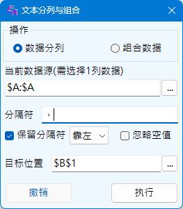
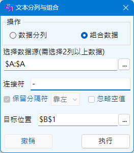
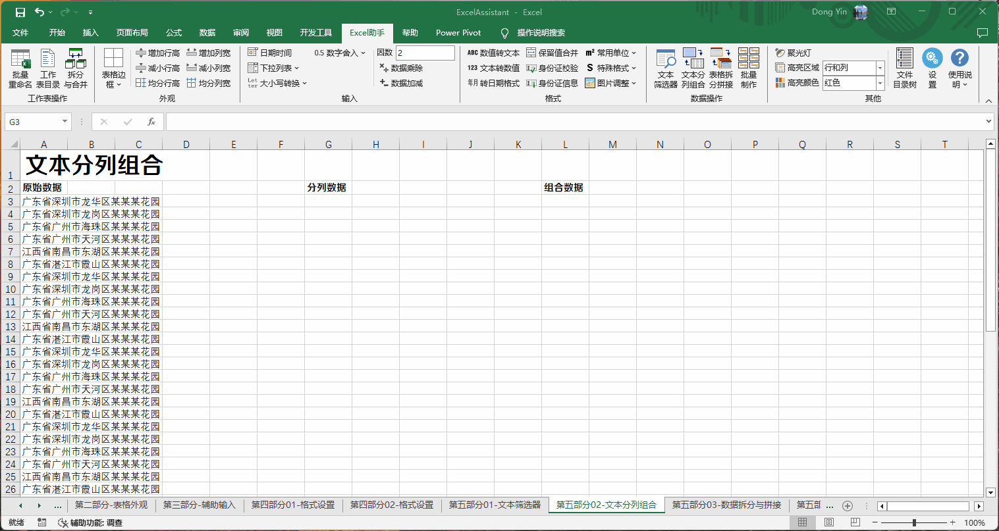
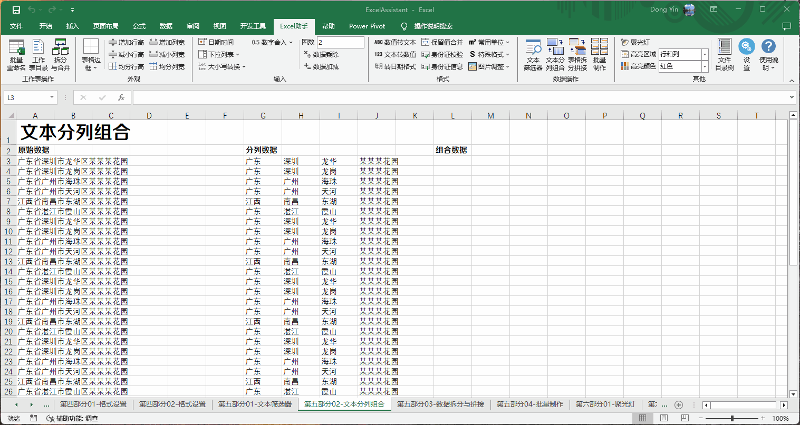

数据分列与组合功能
Excel助手Ribbon菜单中数据操作部分点击文本分列组合按钮即可调出如下操作界面， 该功能主要对文本类型的数据单元格进行操作，可将单列数据分割成多列数据，或者将多列数据拼接为一列。 本功能忽略所选范围内的非文本值数据。
|  |
数据分列 Excel内置分列功能大多数情况下以可以很便捷完成数据的分列任务，本程序是对其功能的补充或扩展。 数据源，为需要执行分列操作的一列数据，可以选择整列或确定的范围的一列数据，但不能选择多列数据。 分隔符，即用于分列的字符，此处需注意，分隔符可以为1个或者多个。不同于Excel分列功能的是，Excel分列功能只能是Tab键、空格、分号、逗号和其他任何一个字符的组合，而不能做到两个以上非指定符号的组合，例如两个汉字。 有时，分列所用的字符，也希望保留下来，本程序也提供了保留的方案，勾选保留分隔符，并选择是靠左还是靠右保留。 但该方式与忽略空值的选项是互斥的。忽略空值，类似于分列功能中合并分隔符的选项，分列后的数据无空值。 |
目标位置，选择一个单元格位置，用于将分列之后的数据存放于此。仅需要选择分列后存放数据区域的左上角单元格位置即可，输出数据的范围由程序自行计算。
|  |
组合数据 分列功能的逆向操作，可以将多列数据用指定的连接符进行拼接。 数据源，为需要执行分列操作的2列以上数据，可以选择整列或确定的范围的数列数据，但不能只选择1列数据。 连接符，可以为空，可以为多个字符，或者使用|字符来指定多个连接符。指定多个连接符的规则为，以|隔开，数据的第1、2列使用第1个连接符，2、3列使用第2个连接符，依此类推；当指定的连接符数少于数据列数-1时，将使用最后一个连接符补足；当指定的连接符多余时，将被忽略；多个连接符的使用相对固定，即当某行数据仅第2，3列有数据，连接数据的仍为第2个连接符。当需要使用|符号作为连接符时，需输入||代替，同理，需要||作为连接符则以||||代替。当以XXX|作为连接符输入时，程序不会忽略空字符，即上述输入代表2个连接符，分别为XXX与空。 |
目标位置与数据分列功能的意义相同。
虽然需要选择多列数据执行组合操作，但并非每一行数据都需要多个数据。在每一行的执行中，数据从左向右执行组合，如单行只有一个数据则直接输出，如遇到空值，将忽略空值。
撤销操作仅能撤销上一次的操作。
注意：
1. 使用前请确认所选输出位置即可预测输出范围内没有其他有效数据，程序并不进行相关检查，如已有数据，将直接覆盖，且退出本程序后不能恢复。
2. 该功能不能对多个非连续区域执行操作。
示例一： 数据分列。
示例二： 数据组合。
